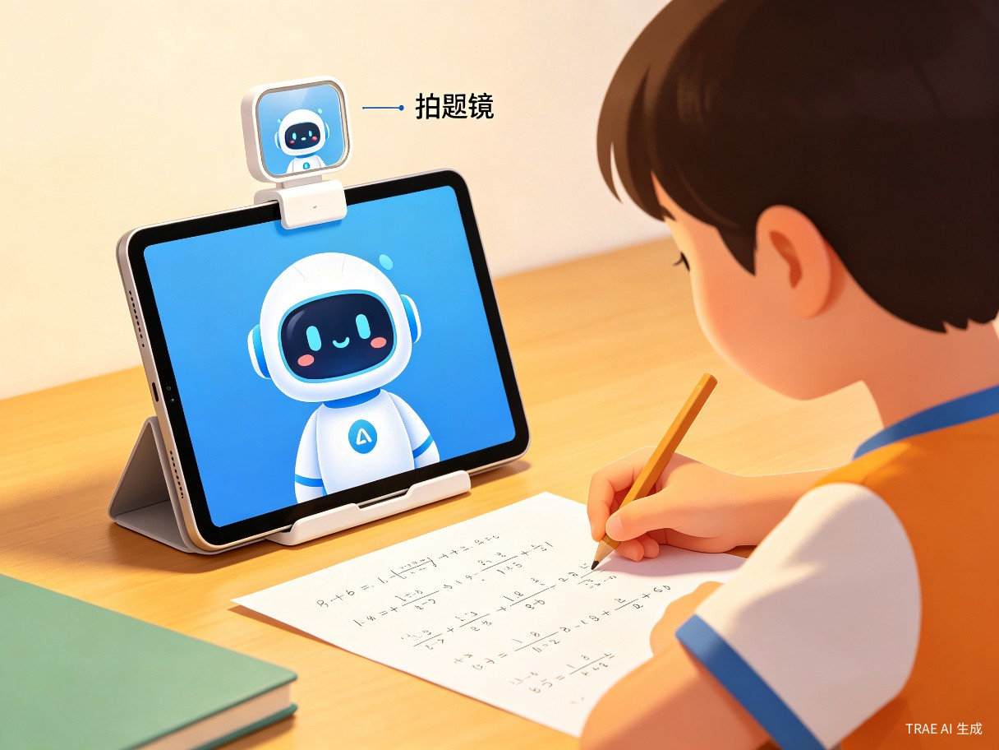
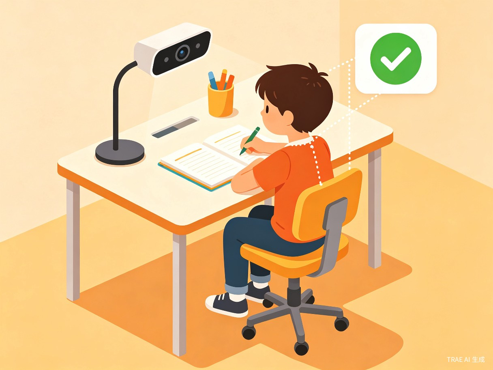
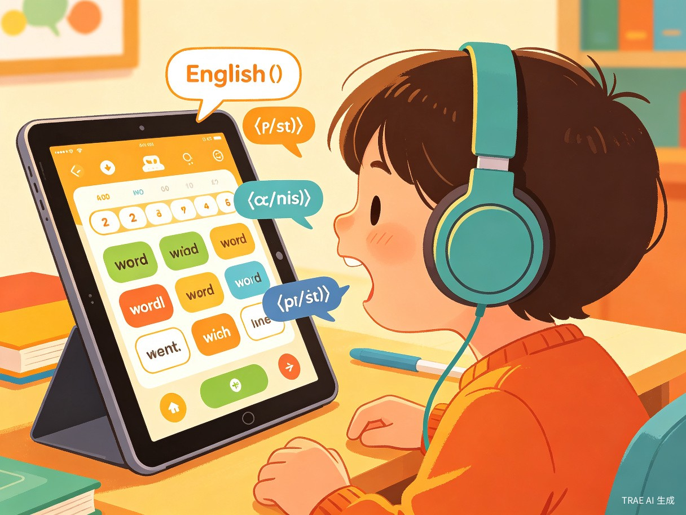

1创意名称与创意介绍
创意名称：智学伴（SmartStudy Buddy）
赛道：学习工作
产品形态：平板App（iPad / Android平板）+ 拍题镜配件
想解决什么问题
当前小学生放学后的作业辅导场景中，家长辅导能力有限、时间精力不足，而孩子写作业时缺乏即时反馈和正确引导，导致学习效率低下、坐姿不良、用眼过度等问题日益严重。据国家卫健委数据，2023年全国儿童青少年总体近视率为52.7%，其中小学生为35.6%，且呈低龄化趋势。同时，大量家长在辅导作业时面临"不会教、教不好、没时间"的困境。
为什么会想到做这个
灵感来源于对身边众多"辅导作业焦虑"家庭的观察——家长下班后疲惫不堪却还要辅导作业，孩子遇到难题无人可问只能搁置，写作业时趴在桌上、离书本太近却无人提醒。我们认为，AI技术完全可以在这一场景中扮演"耐心、专业、随时在线"的辅导老师角色，不仅能解答问题，更能守护孩子的健康和学习习惯。选择平板作为载体，是因为家庭中平板普及率高，无需额外购买专用硬件。
大概是什么产品
智学伴是一款平板端App + 拍题镜配件的组合产品。平板放置在桌面支架上，利用前置摄像头实时监测孩子坐姿和用眼距离；配合可选购的拍题镜（夹式反射镜），将前置摄像头视角反射到桌面，实现对纸质作业的拍摄和批改。App内集成语音问答、智能批改、学情追踪、背单词和口语练习等功能，一台平板即可覆盖全部学习辅导需求。
2核心功能展示
AI坐姿监测
通过平板前置摄像头，实时识别孩子坐姿，低头过近、趴桌、歪身等不良姿势即时语音提醒，守护脊柱健康。
用眼距离提醒
智能检测眼睛与书本/屏幕的距离，当距离小于33厘米时自动提醒，结合用眼时长统计，预防近视发生。
即时作业问答
孩子写作业遇到不会的题目，直接语音提问，AI即时解答并引导思路，而非直接给答案，培养独立思考能力。
拍题镜拍题批改
搭配拍题镜配件，利用前置摄像头反射拍摄桌面作业，AI自动批改并生成详细错题分析和知识点薄弱项报告。
背单词闯关
结合艾宾浩斯遗忘曲线的智能背单词系统，与校内教材同步，通过游戏化闯关激发记忆兴趣。
口语互动练习
AI语音对话练习英语口语，支持情景模拟、跟读打分、发音纠正，让孩子在家也能拥有"外教"陪练。
3功能场景详解
平板 + 拍题镜：一物多用的创新方案
智学伴的核心创新在于充分利用平板已有的前置摄像头，通过一个小巧的拍题镜配件，将摄像头的视野从"拍人"转变为"拍桌面作业"。拍题镜采用夹式设计，轻松固定在平板顶部，通过45度角反射镜将桌面作业反射到前置摄像头中。
这种方案的优势显而易见：
- 无需购买专用智能硬件，利用家中现有平板即可
- 拍题镜成本极低（约20-50元），降低使用门槛
- 前置摄像头拍题，不占用平板屏幕显示区域
- 孩子边写作业边被监测，无需额外操作

坐姿监测与用眼保护
平板放置在桌面支架上，前置摄像头正对使用者，采用轻量级人体姿态估计模型（如MediaPipe Pose），实时捕捉孩子的头部位置、肩部角度和脊柱曲率。当检测到以下情况时，通过柔和的语音提示纠正：
- 眼睛与桌面距离 < 33cm
- 连续用眼超过 25 分钟
- 头部倾斜角度 > 15 度
- 趴桌或身体过度前倾
所有数据同步至App，家长可查看每日坐姿报告和用眼时长统计，及时发现习惯问题。

智能作业批改与学情追踪
孩子完成作业后，将作业纸放在平板前方的桌面上，拍题镜会自动将作业内容反射到前置摄像头。AI即可自动识别并批改，支持多种题型：数学计算题、应用题步骤检查、语文默写和填空、英语选择题和拼写等。
更重要的是，系统会自动归集每日批改数据，生成知识点掌握图谱。家长和老师可以清晰看到孩子在哪些知识点上反复出错，从而有针对性地加强练习。每周自动生成学习周报，让学习进步可视化。
背单词与口语互动
背单词模块与主流教材版本同步，采用间隔重复算法（SRS）智能安排复习计划。每个单词配有发音、例句和趣味图片，通过"闯关+奖励"机制提升学习动力。
口语练习模块基于语音识别技术，提供多种生活场景对话练习（如自我介绍、购物、问路等）。AI会实时评估发音准确度、流利度和语调，给出具体改进建议，让孩子敢于开口说英语。

4典型使用流程
放置平板
调整角度
坐姿用眼
即时解答
AI批改
家长查看
5目标用户及痛点
面向哪些用户
核心用户：小学生（6-12岁）
每天需要完成课后作业、需要即时答疑和习惯引导的学龄儿童，尤其是双职工家庭的孩子。
次要用户：家长
希望了解孩子学习进度、需要作业批改辅助、关注孩子用眼健康的家长群体。
延伸用户：教育机构
托管班、培训机构可作为教学辅助工具，批量掌握学生学情数据。
在什么场景下使用
主要场景：孩子在家中书桌前写课后作业时。平板放置在桌面支架上，开启App即进入工作模式，全程陪伴孩子完成作业。次要场景包括：早起晨读时的口语练习、睡前15分钟的单词复习、周末自主预习等碎片化学习时间。
当前痛点
- 家长辅导能力不足：超过60%的家长表示无法有效辅导小学中高年级数学和英语作业，尤其是应用题和语法题。
- 辅导时间冲突：双职工家长通常18:00后才能到家，孩子放学至家长回家之间有2-3小时的"作业真空期"。
- 近视低龄化严重：小学生近视率逐年攀升，缺乏有效的用眼距离和时长监控手段。
- 学习情况不透明：家长不了解孩子每天作业完成质量和知识点掌握情况，等到考试成绩出来才发现问题。
- 英语口语练习匮乏：大多数家庭缺乏英语对话环境，孩子"哑巴英语"问题普遍存在。
6市场背景与数据
中国K12教育智能硬件市场规模在2025年预计突破800亿元，其中学习辅助类产品增速最快。双减政策后，课后辅导需求从线下机构转向家庭场景，智能学习工具成为刚需。智学伴以"平板+拍题镜"的轻量方案，无需购买昂贵专用硬件，精准切入"家庭作业辅导"这一高频刚需场景，市场空间广阔。
7价值与意义
社会价值：守护亿万儿童健康成长
降低近视率：通过实时用眼距离监测和时长控制，帮助儿童养成科学用眼习惯，从源头预防近视，响应国家儿童青少年近视防控战略。
促进教育公平：让偏远地区和低收入家庭的孩子也能享受到高质量的个性化辅导，缩小城乡教育差距，实现"AI教育普惠"。
缓解家庭焦虑：减轻家长辅导作业的负担和焦虑，改善亲子关系，让家长从"辅导老师"的角色中解放出来，回归"陪伴者"的本位。
商业价值：轻量方案撬动千亿市场
零硬件门槛：利用家庭中已有的平板设备，仅需一个低成本的拍题镜配件即可使用，大幅降低用户尝试门槛，获客成本极低。
多元盈利模式：App基础功能免费+高级订阅（详细学情报告、名师视频讲解）+拍题镜配件销售+内容付费（精品单词包、口语课程），构建可持续的商业模式。
数据飞轮效应：随着用户量增长，作业批改准确率和问答质量持续提升，形成"用户越多→数据越多→AI越聪明→体验越好→用户越多"的正向循环。
8技术方案概览
视觉感知层：平板前置摄像头 + MediaPipe Pose 轻量级姿态估计模型，本地实时推理，延迟 < 200ms，数据不上云保护隐私。
拍题镜成像：通过45度反射镜将桌面作业反射至前置摄像头，配合图像畸变校正算法，确保拍摄内容清晰可读。
语音交互层：平板麦克风 + 语音唤醒词 + ASR语音识别 + LLM大语言模型生成引导式解答，TTS语音合成输出。
作业批改层：OCR文字识别 + 学科知识图谱 + NLP语义理解，支持数学、语文、英语三大学科的自动批改与错因分析。
学情分析层：基于知识追踪模型（BKT/DKT）构建学生能力画像，动态调整学习建议和复习计划。
口语评测层：语音识别 + 发音评估引擎（音素级打分）+ 对话管理，支持多场景口语练习。
9参赛信息
作品名称：智学伴 — AI小学生学习辅导伴侣
参赛赛道：学习工作
产品定位：平板App + 拍题镜配件，面向6-12岁小学生家庭
核心亮点：利用平板前置摄像头+拍题镜实现坐姿监测、作业拍摄批改，零硬件门槛，一台平板解决作业辅导全部需求
创作工具：TRAE Work（AI辅助创意产物生成）